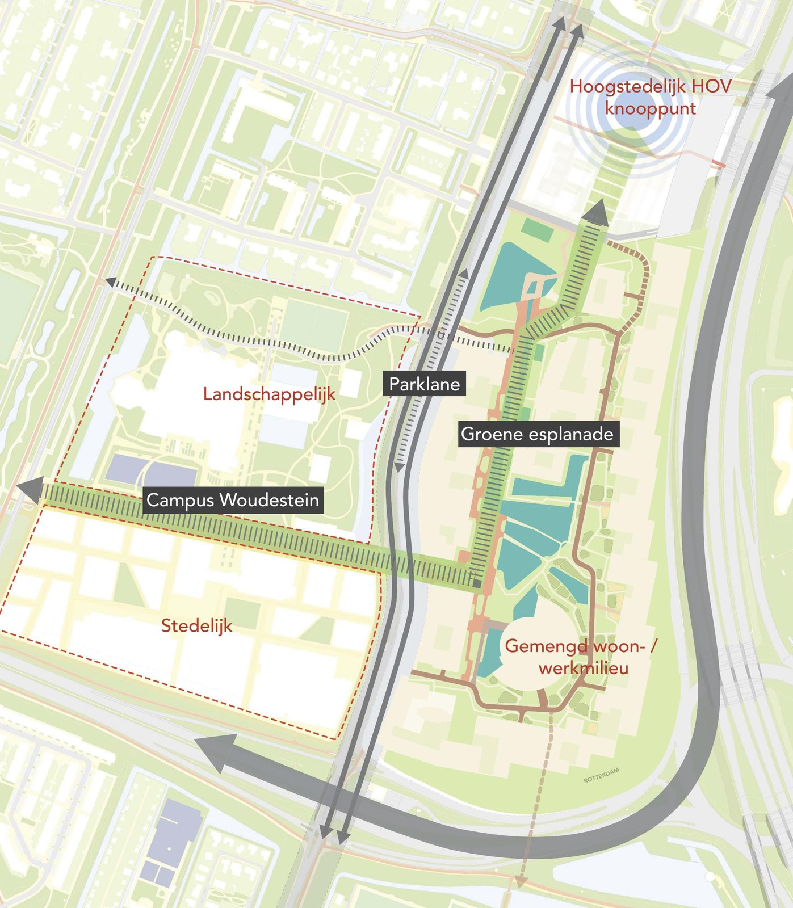
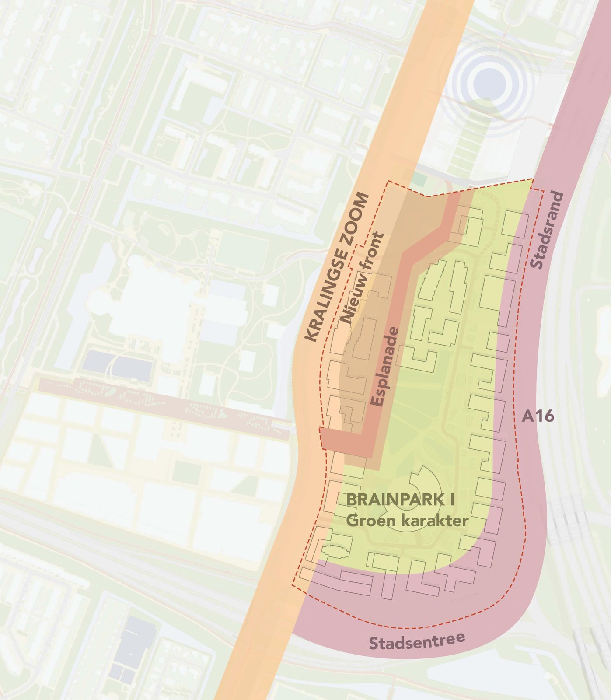
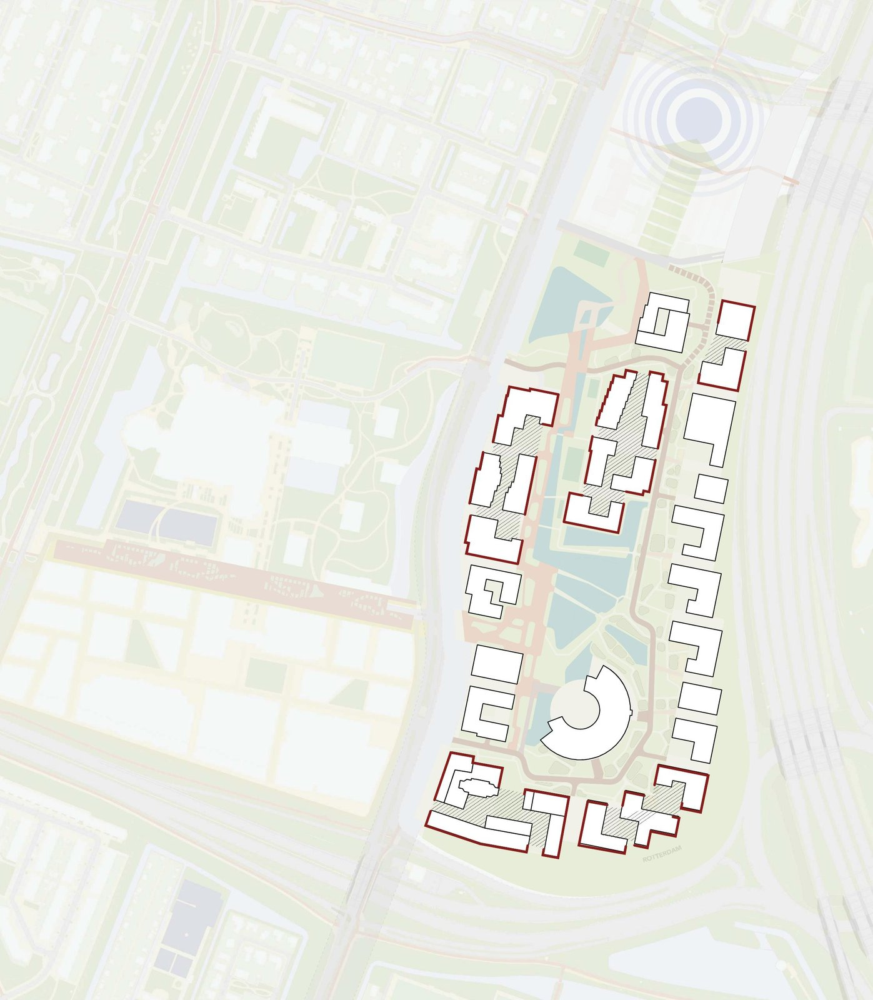
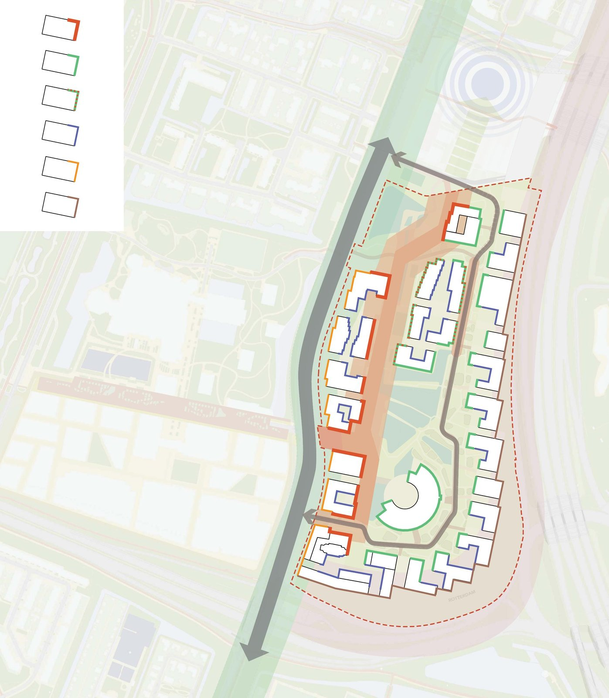
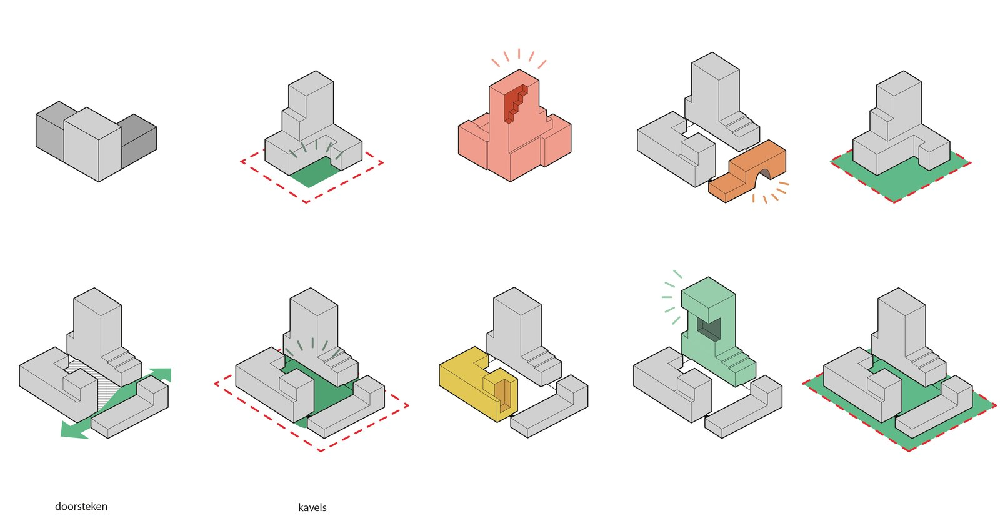

Overview
Brainpark I, a 1980s office district between the Erasmus University campus and the A16, is transforming into a mixed area where living, working and leisure meet. Because of its special character, the municipality designated it a development area in the Rotterdamse Welstandsnota and asked GROUP A to write the Welstandsparagraaf: the criteria the welstand committee uses to assess every new design in the district.
The document translates the urban plan into practical guidelines for architects, from building volumes, plinths and entrances to courtyards, roofs, greenery and materials. The recurring question: how do you keep unity at the urban scale without choking the architectural expression of a single building?
My role
I was responsible for visualising the rules: making clear on paper what each guideline means spatially for the area. With the project leader I kept sparring over how to depict the rules for architecture. The diagram series on this page grew out of those discussions.
The project in images





